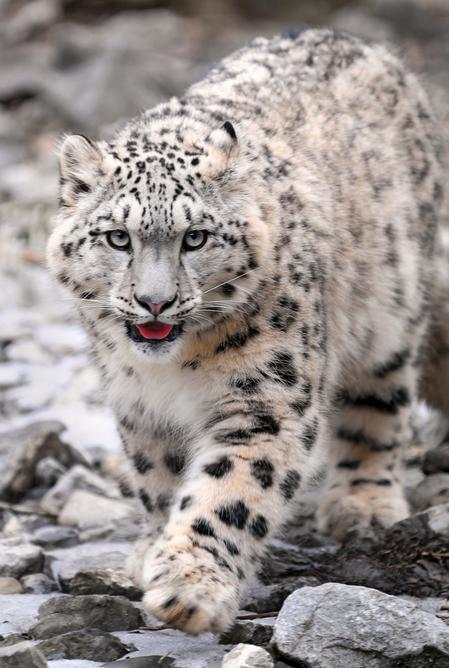

|  |
|---|
In the mountains,I can hear all kinds of voices. This is Snow Leopard. - The snow leopard (Panthera uncia or Uncia uncia) is a critically endangered large cat species native to the mountains of Central Asia. |
| Back To Index |
|---|
| The Story of Snow Leopard and Me |